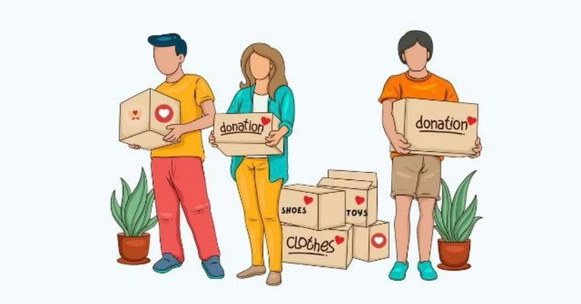

Our Services
Ubuntu Community Care Centre offers different forms of support and community activities aimed at improving the well-being and development of people in the community.
Food Assistance

Our food assistance programme supports individuals and families who may need additional help with basic food supplies. The programme encourages community members to support one another and promotes access to essential resources.
Clothing Support
Clothing support provides suitable clothing and other essential items to community members who may benefit from additional assistance.
Youth Development
Youth development activities encourage young people to learn new skills, participate in positive activities and become more involved in their community.
Community Activities
Community activities bring people together through educational, social and development activities. These activities encourage teamwork, participation and a strong sense of community.